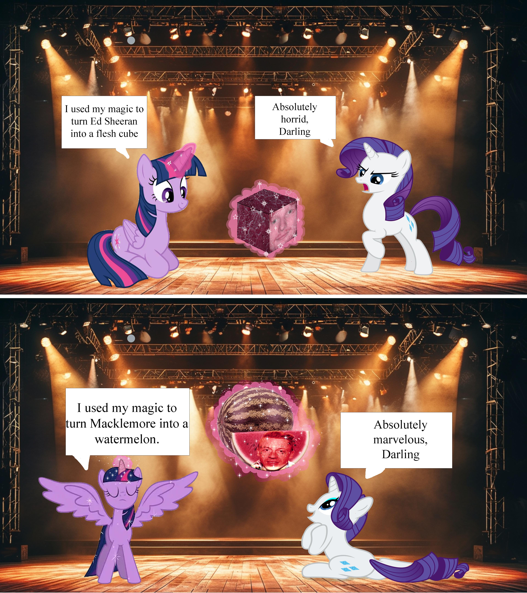

My class was taxed with making a fresh meme mashup. This assignment was due around the time that Ed Sheeran fired Macklemore from his tour due to pressure put on Sheeran once Macklemore's stance on Palestine was once again put into the spotlight. I wanted to show my, and a lot of the worlds', opinion on how Sheeran handled this situation and that I (we) are not ok with it. To learn more of the origin of this meme go to Know your Meme
